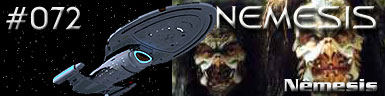
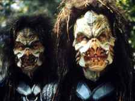
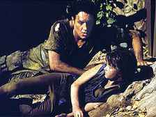
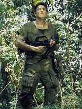
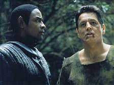
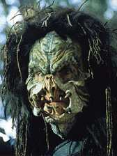

|
Voyager
Temporada 4

Análise do episódio por
Daniel
Sasaki


|

| MANCHETE
DO EPISÓDIO Data Estelar: 51082.4.  Durante uma missão de pesquisa, Chakotay é atacado e tem que efetuar um transporte de emergência antes de perder sua nave auxiliar. Ele chega em um planeta cujos habitantes enfrentam uma guerra brutal e é achado pelos Vori, um grupo de humanóides que lutam contra os sanguinários Kradin. Enquanto procura pelos destroços de sua nave, Chakotay e um jovem soldado são atacados pelos Kradin. O Vori morre.Voltando ao acampamento, Chakotay e os outros partem para encontrar um grupo ainda maior de soldados, mas, no caminho, descobrem que esse grupo foi massacrado. De repente, os Kradin aparecem e muitos Vori perdem a vida na zona de batalha. Chakotay se fere, mas consegue escapar na escuridão da noite. Finamente, encontra um assentamento civil e desmaia.  Na Voyager, a tripulação descobre que os destroços da nave auxiliar foram encontrados na zona de guerra. A tripulação não pode contatar Chakotay, mas recebe a promessa de um embaixador do planeta de que ele será encontrado e resgatado. Quando o primeiro-oficial acorda, os Vori do assentamento lhe dizem onde encontrará equipamento com o qual poderá se comunicar com os colegas. Na manhã seguinte, ele parte, mas o som de aviões inimigos o faz voltar. Ele vê que os Kradin estão levando os Vori à força. Ao descobrir que o inimigo pretende exterminar os idosos, Chakotay tenta lutar, mas perde. Enquanto isso, Janeway se encontra com o embaixador Kradin, que envia uma unidade militar para acompanhar Tuvok na procura por Chakotay.Largado na mata para morrer, Chakotay é encontrado por um soldado Vori, que o liberta. Os dois se juntam para lutar contra os Kradin, mas Chakotay se assusta quando um dos inimigos o chama pelo nome. Embora pareça Kradin, o alienígena assegura que, na verdade, é Tuvok. O Vulcano explica que os Vori vinham usando técnicas de controle mental para recrutá-lo para a guerra. Seus encontros com os soldados e os civis eram, na verdade, simulações para ensiná-lo a odiar os Kradin. Embora descubra que, na verdade, os Vori é que são os vilões, Chakotay não consegue deixar de odiar o antigo inimigo facilmente.
Este é um episódios de altos e baixos. Há quem o elogie como um todo, mas, para este comentarista, o que vale são alguns momentos isolados de força. Aqui, o inofensivo primeiro-oficial tem seus valores pacifistas desafiados por uma situação extrema. Ele está preso em uma floresta com soldados que lhe contam todos os horrores praticados por seus inimigos. Vamos à crítica inicial: perde-se outra nave auxiliar. É a terceira em quatro episódios desta temporada. Desnecessário comentar o clichê com o qual se explica a perda. Mas fica a dúvida: será que o fã deve deduzir que a tripulação da Voyager descobriu um meio de construir naves auxiliares do zero?  É interessante a trilha por que segue o tormento emocional de Chakotay. Ele começa a história dizendo aos Vori que a coisa mais difícil que já fez foi matar, mas termina disparando às cegas, na tentativa de eliminar o máximo de Kradin possível. Fica evidente que a Federação não é composta de santos e seres iluminados. Já dizia Odo, em "The Collaborator", de Deep Space Nine, que até as melhores pessoas são capazes de coisas terríveis em situações difíceis. "Nemesis" corrobora a afirmação.  O final do episódio é que mostra, sem pieguice, quão fraca e desorientada essa postura é. Foram os Kradin os únicos a se colocar à disposição da Voyager. Por outro lado, apesar de aparentarem fracos e sofridos, os Vori que Chakotay conheceu e passou a gostar, na verdade, não passam de uma armadilha simulada, projetada para transformá-lo em um matador eficiente. Conforme "Nemesis" demonstra, o ódio é um motivador eficaz para estimular a dedicação e convicção de soldados.  Enfim, é preciso um certo tempo para digerir a história. Talvez, assisti-la mais de uma vez, pois o ritmo não ajuda muito. Mas, no final, o episódio traz alguns discursos valiosos.
Janeway - "No evidence of cellular
residue on the shuttle wreckage. So, there's a chance Chakotay survived the crash." Chakotay
- "I wish it were as easy to stop hating, as it was to start."
Roteiro de
Kenneth Biller Elenco: Kate
Mulgrew como Kathryn Janeway Elenco
convidado: |